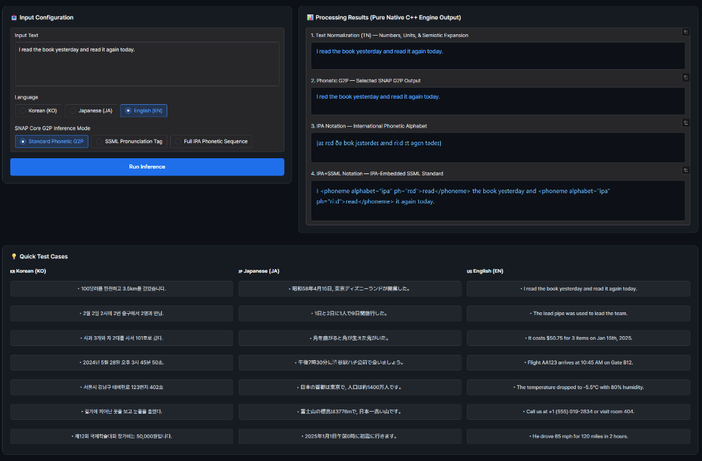
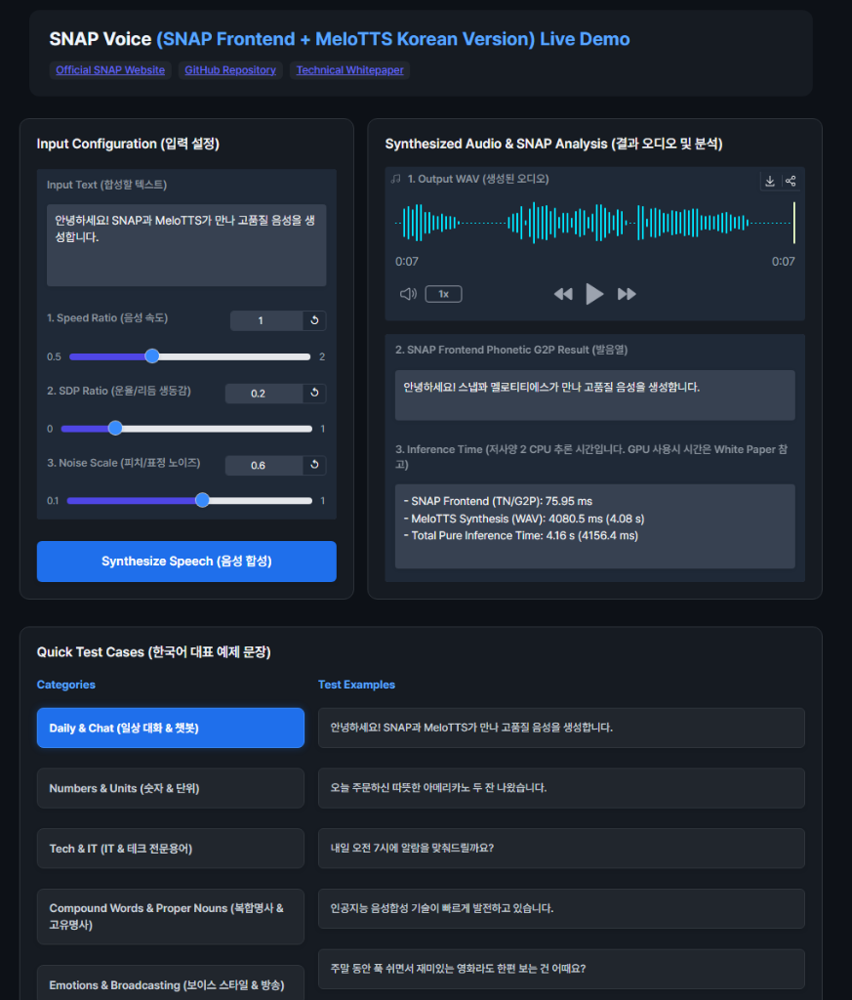

정규화 개요 및 예시
01. 텍스트 정규화 (Text Normalization)
텍스트를 음성(Speech)으로 합성할 때, 문장의 각 단어는 실제 소리 나는 발음 기호 및 표기로 변환(G2P)되는 과정이 필수적입니다. 대부분의 변환은 일반적인 언어적 규칙(Rule)에 의해 처리 가능하지만, 일부 단어는 동일한 표기임에도 문맥(Context)과 의미(Semantics)에 따라 발음이 불규칙하게 달라집니다. 나아가 언어에 따라 단순 발음뿐만 아니라 억양(Pitch Accent), 장단음, 연음 및 경음화 등 다양한 형태의 문맥 의존적 불규칙성이 존재합니다.
사람에 가까운 음성을 합성하는 TTS 모델 기술은 비약적인 발전을 이루었지만, 전처리 단계인 정규화(Normalization) 과정에서의 문맥 오류는 여전히 해소되기 힘든 숙제였습니다. 대량의 불규칙성을 학습한 대형 언어 모델(LLM)을 사용하면 어느정도 완화는 가능하나, 높은 연산 지연 속도로 인해 실시간 서비스에 적용하는 데에는 명확한 한계가 존재합니다.
02. Frozen BERT Probing을 통한 모호성 해소
SNAP은 대형 LLM 대신 경량 BERT에 다양한 목적의 신경망 프로브(Probes)를 결합하여 문장의 문맥과 의미 정보를 정밀하게 추출합니다. 그리고 이를 토대로 규칙(Rule) 모듈과 결합함으로써, 실시간 초저지연과 높은 정밀도의 정규화/역정규화를 수행합니다.
실제 문장 수준 변환 해결 예시
기존 G2P/MeCab 엔진에서 오독이 발생하는 문맥 모호성 문장에 대해 SNAP이 정확히 구별해 내는 비교 대조입니다.
위와 같은 예제들을 굳이 기존 방식대로 처리하려면, 수많은 어휘 사전과 예외 규칙을 지속적으로 확장해야만 합니다. 그러나 이는 규칙 수 폭증에 따른 엔진 복잡도가 기하급수적으로 증가하는 한계에 직면합니다. SNAP은 다양한 목적의 Neural Head들이 Frozen BERT 임베딩에서 문맥 구조를 1차 정제함으로써, 예외 규칙의 복잡도를 최소화하고 정교한 규칙 모듈 결합을 통해 안정적인 정규화를 수행합니다.
03. 실시간 인퍼런스 및 지연시간 최적화
SNAP은 INT8 양자화 기반의 경량 BERT 백본을 활용하여 문맥 표현력을 유지하면서 저지연 실시간 인퍼런스를 제공합니다. 특히 BERT 내장 TTS 모델(BERT-VITS2 등) 연동 시 pre-computed BERT Hidden State를 캐싱·공유하여 추가 연산 오버헤드를 줄입니다.
| 구동 환경 | 문장 처리 지연시간 | 특징 및 적용 분야 |
|---|---|---|
| BERT Hidden State 재활용 (임베디드 모드) | +0.03 ms / 문장 | BERT 내장 TTS(BERT-VITS2 등) 연동시 캐시 공유 (추가 지연시간 Zero 수렴) |
| 단독 엔진 — CPU (INT8 양자화) | 30 – 170 ms / 문장 (일반 평균 ~44 ms) | 단독 CPU 파이프라인 (BERT 제외 12ms, 문장 길이에 따라 30~170ms; 일반 50~70자 평균 ~44ms) |
| 단독 엔진 — GPU (CUDA 가속) | 11 – 14 ms / 문장 | 대규모 음성 서비스 서버 및 고성능 GPU 서빙 파이프라인 (GPU 벤치마크 실측치) |
SNAP 기반 기술
SNAP 모듈형 신경망 Head 아키텍처
9개 언어별 프로브 및 규칙SNAP은 언어별 형태론적 복잡성에 맞춰 고정된 BERT 모델 상단에 신경망 프로브(Probes) 및 규칙 모듈을 선택적으로 결합합니다.
• 신경망 Head (Neural Heads): 형태소 분석 Head (93.5% BIO-POS vs MeCab 84.2%), 동철이의어/변음 Head (98.0% 경음화·연음), 수사 읽기 Head (99.45% 숫자/단위 구분), 기호 분류 Head (99.88% 기호/단위 분류)
• 규칙 모듈 (Rule Modules): 조사 '의'→'에' 변환 규칙, 장단음 규칙, 번(番) 읽기 통합 규칙
핵심 기술 스택 & 사양
역정규화 개요 및 예시
01. 역정규화 (Inverse Text Normalization)
음성 인식(STT) 결과물은 일반적인 서식 형태의 문서와는 표기 방식에 큰 차이가 존재하며, 이러한 격차를 정교하게 줄여주는 단계가 역정규화(ITN)입니다. 특히 사람이 읽기 쉬운 표준 수치 표기는 문서의 용도와 문맥, 의미에 따라 유연하게 변환되어야 고품질의 텍스트 결과를 완성할 수 있습니다. 최근 STT 기술의 발전으로 이러한 차이는 점점 줄어들고 있으나, 결정적으로 의료·국방·연구소·금융 등 특정 도메인에서는 규정된 전문 표기법에 부합하는 맞춤형 역정규화 변환이 필수적입니다.
언어별 역정규화(ITN) 변환 해결 예시
🇰🇷 Korean Release / Multilingual Roadmap기존 규칙 기반 ITN 엔진에서 수치 파싱 오류가 발생하는 발화 문장에 대해 SNAP-ITN이 정확하게 역정규화하는 예시 대조입니다. (현재 한국어를 정식 지원하며, 일/영어는 다국어 확장 로드맵 진행 중입니다).
02. 도메인별 맞춤 표기 커스터마이징
역정규화는 문서를 일반적인 표준 표기 방식으로 변환하는 것도 가능하지만, 도메인의 필요에 따라 원하는 설정을 지정해 두면 금액 표기법, 단위 표기법, 시간 표기법 등 다양한 변환 규칙을 유연하게 커스터마이즈할 수 있습니다.
• 발화 입력: "삼천오백원 결제 / 십오만달러 송금"
• 표준 기본 변환: "3,500원 / $150,000"
• ⚙️ 커스텀 설정 변환: "3,500 KRW / 150,000 USD"
• 발화 입력: "오후 세시 삼십분 / 이천이십육년 칠월 이십칠일"
• 표준 기본 변환: "PM 3:30 / 2026-07-27"
• ⚙️ 커스텀 설정 변환: "15:30 / 2026. 07. 27."
• 발화 입력: "백오십 밀리그램 투여 / 체온 삼십칠도 오분"
• 표준 기본 변환: "150mg / 37.5℃"
• ⚙️ 커스텀 설정 변환: "150 mg / 37.5 deg C"
• 발화 입력: "공오삼공 시 일공오 밀리 포병대대 이동"
• 표준 기본 변환: "05:30시 105mm 포병대대 이동"
• ⚙️ 커스텀 설정 변환: "0530H 105mm 포병대대 이동"
SNAP_ITN 기반 기술
SNAP-ITN Hybrid Neural-Rule Architecture
🇰🇷 Korean Release / Multilingual Roadmap핵심 SNAP 엔진은 3개국어(한국어·영어·일본어) 정규화를 완벽 지원하며, 역정규화 엔진인 SNAP-ITN은 현재 한국어를 선행 정식 지원하고 일/영어 확장을 진행 중입니다.
날짜, 시각, 금액, 수사(한자어 vs 고유어), 전번, 기호 등 수치 세부 범주를 문맥에 따라 정밀 분류합니다.
신경망 인퍼런스 확률, N-gram Perplexity, 그리고 변환 전후 BERT Hidden Representation의 코사인 유사도를 실시간으로 검증(Semantic Preservation Verification)합니다. 불확실성이나 의미 발산이 검출되면 원본 음성 텍스트로 안전하게 롤백하여 수치 변환의 데이터 무결성을 유지합니다.
34,281 문장 대용량 코퍼스 및 300건의 고난도 벤치마크 테스트에서 99.96% Effective Pass Rate 달성 (CPU 10ms / GPU CUDA 0.23ms 초저지연).
응용 예시 및 데모
실시간 텍스트 정규화 데모
Hugging Face Spaces 환경에서 SNAP Native C++ 엔진 기반의 텍스트 정규화(TN) 및 G2P 추론을 직접 테스트할 수 있는 대화형 데모입니다. 한국어, 영어, 일본어의 발음 변환 및 SSML 출력을 지원합니다.

TTS Engine Integration (SNAP Frontend & MeloTTS)
SNAP G2P × MeloTTSSNAP G2P 엔진과 BERT를 내장한 TTS 모델을 결합하여, 더욱 정확한 발음을 구사하는 TTS로 업그레이드시킵니다.
"고가도로를 지나는 3번 버스를 타고 3번 갈아타야 갈 수 있어요."
"2024년 3월 15일에 3명의 동료와 2번 버스를 타고 3번 출구로 나갔습니다."
"AI 모델의 성능이 99.8% 달성되어 3회 연속 1위를 기록했습니다."
위 예제는 SNAP Frontend와 오픈소스 MeloTTS/BERT-VITS2를 결합하여 제작되었습니다. MeloTTS/BERT-VITS2에서 이미 연산하는 BERT 모델의 Hidden Layer 값을 단 1회 계산 후 캐싱(Cache)하여 음성 디코더 및 SNAP의 신경망 Head들에 100% 공유함으로써, BERT 추가 재계산 없이 거의 0에 가까운 오버헤드(~0ms)로 문맥과 의미에 따른 정교한 발음을 실시간 합성합니다. BERT가 내장되지 않은 기존 일반 TTS 모델과 결합하더라도 BERT를 ONNX INT8 양자화하여 적용하므로 실시간(Real-time) 처리가 충분히 가능합니다. 다른 TTS 모델들과의 결합은 추후 공개될 예정입니다.
AI Video Dubbing (SNAP + 더빙 workflow)
SNAP + Dubbing WorkflowSNAP 엔진을 다국어 영상의 한국어 더빙 정규화 파이프라인에 적용한 예시입니다.
Inverse Text Normalization (SNAP-ITN Core Features)
SNAP-ITN 엔진은 STT(음성 인식) 결과를 각 산업 도메인 특성에 맞게 가독성 높은 표기법으로 후처리 변환하는 핵심 포스트 프로세서입니다. 단순 수치 변환을 넘어 금융·의료·방송·모빌리티·법률 등 도메인별 맞춤 포맷(날짜·시간·통화·주소), 추임새 정제, 자막 띄어쓰기, 개인정보 비식별화, Trust Layer 롤백 쉴드까지 통합 제공합니다.
구어체 발화 시 습관적으로 발생하는 '어', '음', '그...', '저...' 등의 유효하지 않은 추임새(Disfluency) 및 간성어를 자연어 엔진이 실시간 감지하여 깔끔하게 정제합니다. (설정 모드: 원형 보존 / 단순화 / 완전 제거)
주민등록번호, 전화번호, 계좌번호 등 개인식별정보(PII) 패턴을 자동 감지하여 데이터 저장 전 안전하게 마스킹 처리합니다.
변환 전후 텍스트의 BERT Hidden Representation 코사인 유사도 및 인퍼런스 확률 분포를 실시간으로 비교 검증(Semantic Preservation Verification)합니다. 변환 과정에서 원래 의미가 다르게 왜곡되거나 수치 할루시네이션(Hallucination) 위험이 감지될 경우, 변환을 즉시 차단하고 안전하게 원문 텍스트로 롤백하여 데이터 무결성을 보증합니다.
문서 및 저장소
SNAP 및 SNAP-ITN 엔진의 공식 C++ 런타임 바이너리 및 GitHub 저장소입니다.
SNAP + MeloTTS 음성 합성 실시간 데모
SNAP Frontend와 MeloTTS/BERT-VITS2를 결합하여 문맥 의존 고품질 음성을 실시간 합성하는 인터랙티브 허깅페이스 데모입니다.
